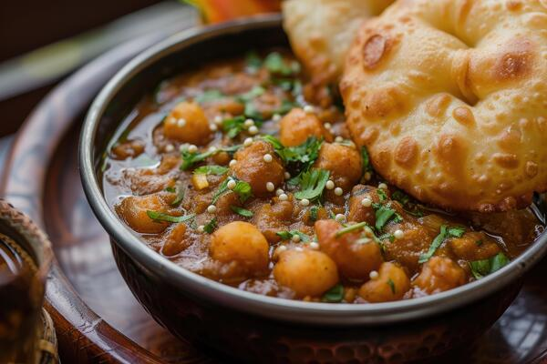

Odin Recipes
cholebhature

Description
This is called chole bhature.
Ingrediants
- Chickpeas
- Garlic
- Green chilies
- Onion
- Powdered spices
Steps:
- Step 1: Soak raw chickpeas in enough water to cover them for the entire night. you should consume about five cups of raw chickpeas in the morning after soaking two cups of them. Empty the water that the chickpeas were submerged in.
- Step 2: Add 2 bay leaves, 5 green cardamom pods, 1-inch cinnamon stick, 4 to 5 whole black peppercorns, and 2 black tea bags (remove if you don’t care about the color) to the stovetop pressure cooker with the chickpeas.
- Step 3: Add around 5 cups of water and 1 teaspoon of salt.
- Step 4: After turning off the heat, take the cooker outside to cool. Check the chickpeas and open the cooker once the steam disappears. They need to be simple for you to press using your fingers.If not, cook for two more whistles while closing the cooker. Using a pair of tongs, remove the cinnamon stick and bay leaves from the tea bags as well as the tea bags from the cooker.
Put this away and get to work making the masala.
- Step 5: When it’s hot, add a few teaspoons of oil. Next, include a cup of grated onions and cloves in the pot. Fry for 7 to 8 minutes, or until the onions are light golden brown and the raw scent has disappeared.
Cook the ginger-garlic paste for two minutes, or until the raw scent is gone. Stir in one cup of tomato puree at this point.
- Step 6: With the lid on, boil the tomatoes over medium-low heat for about fifteen minutes, stirring every three minutes or so.
This is an important stage, in my opinion. The tomatoes must be cooked through and the raw smell removed.
- Step 7: Add spices like 3 teaspoons chole masala, 1/2 teaspoon red chili powder, 1/2 teaspoon paprika, 3/4 teaspoon cumin powder, and 1/2 teaspoon salt.
- Step 8: When the chickpeas are well mixed with the remaining masala, add the boiled ones to the pan and stir. After 30 minutes, the gravy will thicken, so adjust the amount of water.
If you’re one of those people who like thick gravy rather than thin gravy with chole, then feel free to add extra water to the recipe. While the chickpeas are cooking, mash some of them with the back of a ladle or spatula.
- Step 9: The curry, chickpeas, and all the spices were combined thoroughly after 30 minutes. We are now able to temper. In a small pan, heat 1 tablespoon of ghee.
When it’s heated, add the julienned ginger (from the 1-inch ginger). Don’t burn the juliennes; instead, fry them until they get golden brown.
- Step 10: Finally, stir in 2 tablespoons of chopped cilantro, 1/2 tablespoon crushed kasuri methi (dried fenugreek leaves), and 1/4 teaspoon garam masala. Mix everything, add extra cilantro to the chole if desired, and serve hot.